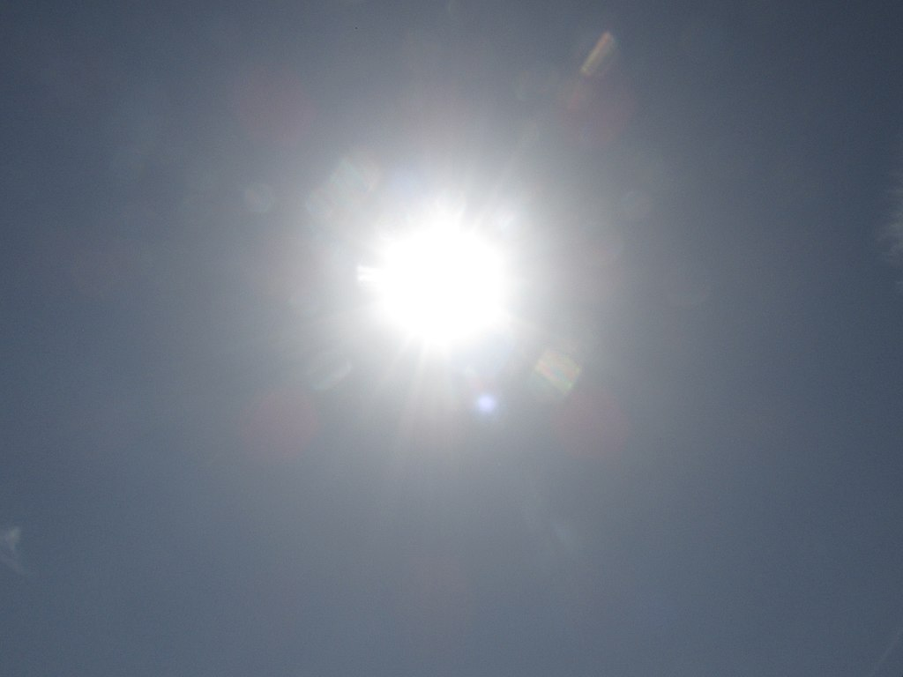

|
The AstronomerYour daily dose of Space |
|
The AstronomerYour daily dose of Space |
| A Brief Description | |
|---|---|
| The Sun is a star at the center of our solar system and it is also the most important celstial object in it. It's mass makes up about 98% of the Solar System and acts as an anchor for the Solar System, guiding planets and keeping planetary orbits intact. It is the most important source of energy and light for live to thrive on Earth. It is the largest and most massive object in the Solar System, being 109 times larger and 330,000 times more massive than the Earth. The Sun is mostly made of hydrogen that is being converted to Helium. The Sun formed around 4.6 billion years ago and is estimated to last billions of years as a Main Sequence Star. The Sun is classified as a G-type (G2V) Main Sequence Star. |  |
| Life Phase | Structure |
|
|
|
| The Sun's life phase involves some of the most destructive, complex and beautiful processes in the Universe. The Sun first formed around 4.6 billion years ago, roughly the same age as the Earth. The Sun was formed from a collapsing giant molecular cloud that would soon form the Solar System we know today. Some evidences also point out that the Sun had stellar siblings that also formed from the same molecular cloud. The Sun had also less luminosity, radius and temperature than it has today. Currently, it is halfway through its main sequence. This process will go on so long as a balance of gas exists in the Sun. By the next 5 billion years, the Sun will consume most of these energy. While the Sun does not have enough mass to undego a supernova. But do not think that we are away from harm's way. As the energy in the Sun is depleted, the balance in the Sun will be destroyed and a tug-of-war will happen between gravity energy. As the sun continues throughout its lifetime, the Sun's luminosity and radius will increase drastically. In about a few billion years, the Sun's luminosity would have increased and all life on Earth would cease to exist without photosynthesis (as most plants depend on the Sun) and without water (all surface water would evaporate at the heat of the Sun). Soon, the Sun would devour Mercury and Venus and even possibly the Earth and then implode into a white dwarf, its very own stellar corpse. As a white dwarf, it is expected for it to live billions of years more as a corpse. | The Sun is a very complex structure of the Universe and, therefore, will have a very complex structure of processes, layers and composition. The Sun is mainly divided into 6 layers. These are (from inside to outside):
Furtheremore, the Atmosphere can be divided into 4 layers. These are (from inside to outside):
Different Phenomena can also form, from solar flares to solar storms to sunspots. These Phenoma have much more different characteristics than other general parts of the Sun. Apart from these, the Sun is composed of different matter. The Sun's composition are:
|
| General Characteristic | Solar Phenomena |

Coronal Mass Ejection
|
|
| The Sun is a G-type Main Sequence (G2V) Star. The Sun is the brightest object found in the sky, with an absolute magnitude of +4.83 and an apparent magnitude of -26.74. Its radius is 696,342 km. Its average distance from the Earth is 150,000,000 km or 1 AU. Its shape, unlike most planets, is a near perfect sphere with its polar diameter only differs by 10 km from the equatorial diameter. It is a Population I or heavy-element-rich star with remnants of Population II or heavy-element-poor stars. Like most rotating objects in the Universe, the Sun is affected by the Coriolis force/effect and is also affected by the convective motion. While it is not known, the Sun does not stay at a fixed position. The Sun actually wobbles around its position in the Solar System due to the gravitational pull of Jupiter. It also orbits around the Milky Way Galaxy and brings along with it the other objects in the Solar System. It completes this orbit every 225-250 million years. The Sun also completes a full spin from its equator every 25.6 days, meaning that the Sun rotates at a speed of around 2 km/s. | The Sun experiences different phenomena almost every day and are called Solar phenomena. These may take many forms such as solar wind, solar flares, solar storms, solar eruptions, coronal mass ejection and sunspots. The Sun can also be part of some events on Earth like solar eclipses. Solar winds are a stream of charged particles released form the upper atmosphere of the Sun. These winds can reach speeds of up to 250-750 km/s. Solar winds can cause Northern or Southern Lights and have been linked to Geomagnetic Storms. Solar flares are a sudden flash of increased brightness of the Sun observed in sunspot groups. They are most often accompanied by a coronal mass ejection. They are able to disturb and interact with the Ionosphere and can disrupt radio communications on Earth, although it does take days to reach Earth. Coronal mass ejection is a significant release of plasma and accompanying magnetic field from the solar corona. They are present in prominent solar eruption. Such CMEs can interupt the Earth's magnetosphere causing electricity to shut down like the Carrington Event. Sunspots are large regions with reduced temperature that can be possibly seen from Earth without space telescopes. They are related to solar flares and coronal mass ejections by the fact that these phenomena most often occure in these sunspots. |
| Gallery | |
|  | |